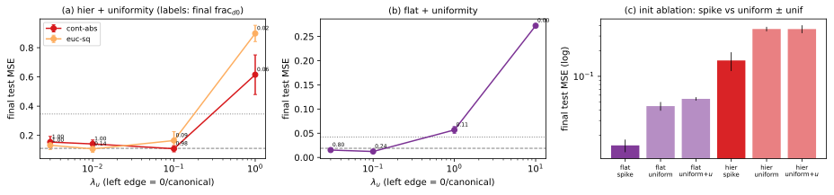

The mechanism behind Separator’s
collapse
A pruning–collapse race: timing, not collapse itself, decides the
damage
Setup: instrumented, bit-exact re-runs
Every run captures the dual-channel logits \(\phi\) and all weight matrices every 250
optimizer steps (NEUREP_PI_SNAPSHOT_EVERY; new opt-in in
train.py), plus the converged state. The 31 arms cover: the
exact flat/hier winners (5 seeds, reproducing
the store’s per-seed MSE to \(\le1.2\times10^{-5}\) — so collapse metrics
pair with the published numbers seed-by-seed); a \(2\times2\times2\) cross of task \(\times\) dist \(\times\) \(c\) at \(K{=}8\); the four other hier
dchn variants; both headline variants on
weak/dense; a \(\lambda_u\) grid for the new uniformity
term; and a pi_init=uniform ablation.
Separator.pi_summary now logs pair-distance stats
(pi.dchn_mean_d, frac_d0,
mean_eucd) to events.jsonl, so every
future dchn run is collapse-classifiable without checkpoints.
\(\mathrm{frac}_{d0}\) below = fraction
of cross-boundary pairs with \(d<10^{-3}\) in the regularizer’s own
metric.
Anatomy of the
“working” flat solution (vs. hier)
Consensus + outliers, not factor recovery. At
convergence every used channel on flat concentrates on one
shared code (consensus share \(0.94\pm0.02\) pooled; e.g. all 24 input
senders share one code, 52/64 hidden receivers share one), with a small
outlier set carrying the only real distances (Fig. 1a,c). The
binarized input-boundary codes give ARI \(\approx0.0\) against the task’s true factor
sets — the codes never align with the generative
modules, even where Separator is best. What outliers are: at
B1_in the outlier neurons’ total \(|W|\) degree is \(0.75\) vs. \(4.66\) for consensus neurons (seed 0;
seed 1: \(5\times10^{-4}\) vs. \(3.7\)) — the regularizer assigns
deviant codes to whole neurons and then disconnects them.
Mechanistically Separator on flat is a learned
unit-level pruner with mild nuisance suppression
(signal/nuisance input-mass ratio \(4.1\) vs. NoReg \(2.5\); plain L1 reaches \(26.6\) yet has worse MSE, \(0.019\) vs. \(0.015\) — neuron-granular beats
edge-granular here), and its anatomical modularity at the HP-chosen
\(c\) is barely above L1’s (\(Q\): \(0.22\) vs. \(0.28\)).
hier collapses in order, not to a
point. The converged hier codes stay spread in
\(\sigma\)-space (\(\|\sigma_i-\sigma_j\|_2\) up to \(0.8\)) while containment \(d=0\) for 100% of pairs (Fig. 1b,d): the codes arrange into
elementwise-comparable chains — cont’s zero set is a fat
cone, vastly larger than euc’s (exact equality), which is
the geometric reason cont collapses where euc
does not (flat, \(c{=}0.03\): cont collapses at
13–14k, euc never).

flat: one consensus
code (uniform body) + outlier rows. (b) hier: visible
per-neuron texture — but binarized codes are near-identical (59/64 share
one code); the texture is sub-threshold. (c) consensus share per
channel. (d) the smoking gun: hier pairs sit at \(d\approx0\) (own metric) across point
distances up to \(0.8\) —
order collapse; flat’s metric behaves
sanely.\(\mathcal{R}\!\to\!0\) is a race; \(c\) and the task set the odds
\(\mathcal{R}=\sum|W_{ij}|\,d_{ij}\)
has two descent channels: shrink \(|W|\) on misaligned edges (pruning —
preserves code structure and deletes the very gradient that pulls
codes together), or shrink \(d\)
(collapse). Fig. 2 shows the race on the headline pair: on
flat, \(W\)–\(d\) alignment forms by step 2k (Spearman
\(-0.8\)) and high-\(d\) edges stay pruned \(4\times\) below low-\(d\) edges while the collapse front stalls
at \(\mathrm{frac}_{d0}\approx0.8\); on
hier no alignment survives and the front completes by 6–7k.
The cross design (Fig. 3a) attributes causality:
(i) coupling — at fixed task and distance, raising
\(c\,{:}\,0.03\!\to\!1\)
delays collapse (hier/euc: \(1.4\)k\(\to\)16k; hier/cont: 2k\(\to\)6.6k; flat/cont:
13.7k\(\to\)16k), the opposite of the
“stronger coupling = stronger collapse pressure” reading — strong
coupling prunes faster, and pruned edges no longer drag codes;
(ii) task — at every matched config hier
collapses earlier than flat (euc, \(c{=}1\): 16k vs. never);
(iii) geometry — cont collapses where
euc does not (zero-set size).
weak/dense follow the flat
pattern (euc engaged; cont collapsing late and harmlessly at
17–19k/8k).

flat separates (pruning wins), hier
does not (for hier the final-\(d\) deciles are degenerate — all \(d=0\)). (c) \(W\)–\(d\)
alignment. (d) same variant (hier euc-sq), \(c\) moves the collapse onset (dotted
vertical) and test loss stops improving at the
collapse: \(c{=}0.03\)
collapses at 1.4k and freezes at \(\approx\)NoReg (gray); \(c{=}1\) collapses at 16k and reaches \(0.132\).Collapse timing \(\leftrightarrow\) performance; seed variance
On hier the damage is a function of when the
codes go (Fig. 2d, 3b,c): onset
\(\le\)2k \(\Rightarrow\) \(0.28\)–\(0.32\) (\(\approx\)NoReg \(0.346\)); 6–7k \(\Rightarrow\) \(0.154\); 15–17k \(\Rightarrow\) \(0.11\)–\(0.13\) — and the engaged-forever states are
worse than late collapse: pen=sq variants that
never collapse sit at \(0.16\)–\(0.18\), pen=abs variants with
engaged-but-wrong codes at \(0.37\)–\(0.38\) (an \(|W|\)-penalty aimed at the wrong edges;
plain L1, which aims at all edges equally, gets \(0.111\)). So collapse is neither a pure
failure mode nor a benign annealing — late collapse is an
annealed curriculum; early collapse is death at birth; no collapse with
a wrong abs prior is active harm. The
validation-MSE HP search implicitly optimized this timing: it picked
\(c{=}1\) on hier
(delaying collapse as long as the grid allowed) and a collapse-prone
cont variant whose graceful degradation beat staying
engaged. Seed variance: between configs, timing
explains the spread; within a config the 5-seed scatter
(e.g. hier winner \(0.105\)–\(0.224\)) is not explained by
timing (onsets nearly constant, \(6.5\)–\(6.75\)k; \(\rho=+0.58\), n.s., \(n{=}5\)) — what differs across seeds is
presumably which codes form before the collapse, not when it
happens.

hier (red) always earlier than flat (purple)
at matched config; higher \(c\) always
later. (b) final MSE (log) per arm; lines: NoReg (dotted), L1 (dashed).
(c) all hier runs: early-collapsed (blue, left) cluster at
NoReg; late-collapsed cheap; engaged abs (orange squares)
worst of the non-forced states; \(\lambda_u\)-forced spread (green, far right
top) catastrophic.An anti-collapse term from first principles — and what it can(’t) do
\(\mathcal{R}\) is a pure
alignment objective (Wang & Isola 2020): its minimum
contains \(d\equiv0\). We added the
uniformity counterpart over the same pair grids, \(W\)-independent: \(\mathcal{R}\mathrel{+}=
\lambda_u\,\tfrac{1}{L}\sum_\ell \log \mathrm{mean}_{ij}
\exp(-t\,d^{(\ell)}_{ij})\), \(t{=}5\) (unif in the method
ID; log-mean-exp is maximal exactly on the collapse set, focuses
gradient on the closest pairs, and floors near \(-\log K\) for a balanced partition so
legitimate same-module pairs survive). Results (Fig. 4, \(n{=}3\) pilot): on hier, \(\lambda_u{=}10^{-1}\) delays the winner’s
collapse \(6.6\)k\(\to\)15k and yields 0.109
— the best Separator result on hier to date (canonical
\(0.154\), L1 \(0.111\), Flat-Simplex \(0.099\)); euc-sq at \(\lambda_u{=}10^{-2}\) similarly \(0.132\to0.107\). On flat,
\(\lambda_u{=}10^{-1}\) improves \(0.0152\to0.0123\) and sharpens nuisance
pruning \(4\to82\) (diverse codes give
the pruner more high-\(d\) pairs to act
on). But the dial has two hard limits. Too strong =
catastrophe: at \(\lambda_u{=}1\) collapse is fully prevented
(\(\mathrm{frac}_{d0}\le0.06\)) and MSE
explodes (\(0.62\) hier,
worse than NoReg; \(0.27\)
flat) — permanently engaged codes under an active wiring
penalty are the worst state of all; this arm also has the
highest anatomical modularity (\(Q{=}0.64\)), a clean demonstration that
\(Q\) and function are
decoupled. It cannot replace the init: with
pi_init=uniform all codes start \(\approx\)identical, the log-mean-exp
gradient is the same for every neuron (repulsion amplifies
asymmetry; it cannot create it), and runs are born collapsed (\(\mathrm{frac}_{d0}{=}1\) at the first
snapshot) and stay \(\approx\)NoReg
with or without \(\lambda_u\) (\(0.36\) hier, \(0.044/0.054\) flat). The
symmetry-breaking spike init is load-bearing.

hier: sweet spot at \(\lambda_u\in[10^{-2},10^{-1}]\) dips below
L1; \(\lambda_u{=}1\) explodes.
(b) flat: same shape. (c) uniform init is born-collapsed
and \(\approx\)NoReg; \(\lambda_u\) does not rescue
it.What this changes
(i) Describe Separator per task as a phenotype
with a clock: report \(\mathrm{frac}_{d0}\) and collapse onset
(now free in events.jsonl via pi.dchn_*)
alongside MSE. (ii) \(c\) selection is implicitly collapse-timing
selection; the new \(\lambda_u\) dial
controls the same axis directly and its sweet spot beat every canonical
hier Separator — worth a rulebook-grade confirmation (equal
HP budget including \(\lambda_u\),
\(\ge\)5 seeds, paired tests) before
any paper claim; the \(n{=}3\) pilot is
not that. (iii) Keep the spike init; repulsion provably
cannot substitute for it. (iv) Don’t sell anatomical
\(Q\) alone — the most modular
hier run here is the worst-performing one.
(v) The “M1/M3 needs meaningful learned codes” ablation
story survives, but “meaningful” now has a mechanism: codes are useful
exactly while they mark prunable units and harmful when a wrong code
pattern keeps an abs penalty engaged.
Reproducibility: runs under
notebooks/_cache/mechanism/ (31 arms \(\times\) 3–5 seeds;
materialize_mechanism.py); analysis
analyze_mechanism.py \(\to\) _mechanism_data.json;
figures make_mechanism_figs.py; all in
notebooks/collapse_investigation/. Store winners reproduce
seed-by-seed to \(\le1.2\times10^{-5}\)
MSE. Anchors (NoReg/L1) from surviving best.pt of the v10
final runs. Companion doc: collapse_review.pdf (the \(\mathcal{R}\)-decomposition this study
explains).